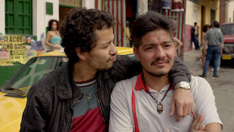
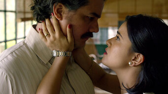
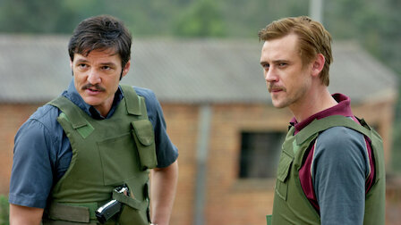
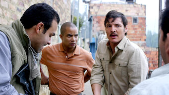
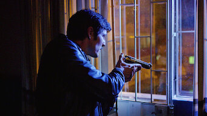
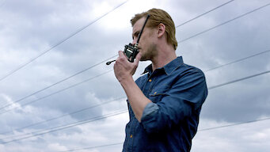
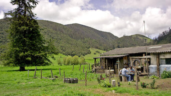
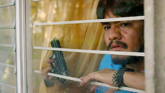

Capítulo 1: Por fin libre

Pablo Escobar ha escapado de La Catedral y se encuentra en fuga. El gobierno colombiano intensifica sus esfuerzos para capturarlo, mientras Escobar se enfrenta a desafíos dentro y fuera de su organización.

La segunda temporada de Narcos continúa con la intensa y dramática historia del narcotraficante más infame de Colombia, Pablo Escobar. Después de su audaz escape de La Catedral, Escobar se encuentra en una frenética lucha por mantener su poder y su vida. Esta temporada explora la caída de uno de los criminales más buscados del mundo, mientras la DEA y las fuerzas colombianas intensifican sus esfuerzos para capturarlo. Desde la vida de Escobar en la clandestinidad hasta su impactante final, cada episodio ofrece una mirada profunda a los eventos que definieron el final del imperio del Cartel de Medellín. A medida que los aliados se vuelven enemigos y la red de traiciones se cierra, la temporada 2 de Narcos ofrece una narrativa cautivadora sobre la implacable búsqueda de justicia.

Pablo Escobar ha escapado de La Catedral y se encuentra en fuga. El gobierno colombiano intensifica sus esfuerzos para capturarlo, mientras Escobar se enfrenta a desafíos dentro y fuera de su organización.

Con Escobar huyendo, el Bloque de Búsqueda redobla sus esfuerzos. Los agentes Peña y Murphy se acercan más a su objetivo mientras enfrentan las consecuencias de la violencia de Escobar.

El Cartel de Medellín se enfrenta a una creciente presión por parte de las autoridades y sus rivales. La guerra por el control de los territorios se intensifica y los aliados de Escobar comienzan a dudar de su liderazgo.
La estructura del Cartel de Medellín comienza a desmoronarse. Los agentes de la DEA y el Bloque de Búsqueda ven la oportunidad de acercarse a Escobar.

Las fuerzas del gobierno y Los Pepes unen esfuerzos para derribar el imperio de Escobar. Las lealtades se ponen a prueba y las traiciones se vuelven más frecuentes.

Aparece un nuevo grupo, Los Pepes, decidido a acabar con Escobar y su imperio. La violencia aumenta y las lealtades se ponen a prueba mientras los enemigos de Escobar se unen.

Escobar intenta negociar su rendición para proteger a su familia, pero el gobierno rechaza sus condiciones. La caza del capo se vuelve aún más intensa.

Escobar se enfrenta a la presión constante de las autoridades y los enemigos que buscan derribarlo. Sus días están contados mientras la situación se vuelve insostenible.

Con Escobar cada vez más aislado, el Bloque de Búsqueda se acerca más que nunca. La lucha interna y las traiciones dentro de su organización aumentan.

El final de la persecución de Escobar se acerca. La dramática culminación de la caza lleva a su muerte, cerrando un capítulo oscuro en la historia de Colombia.